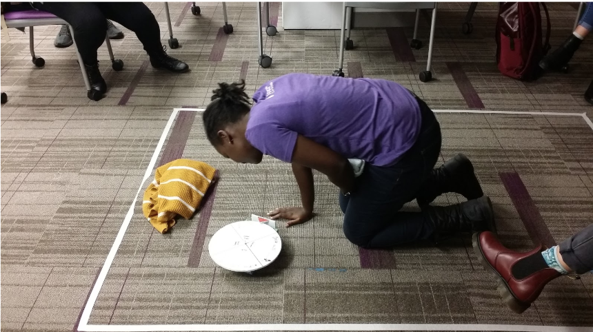
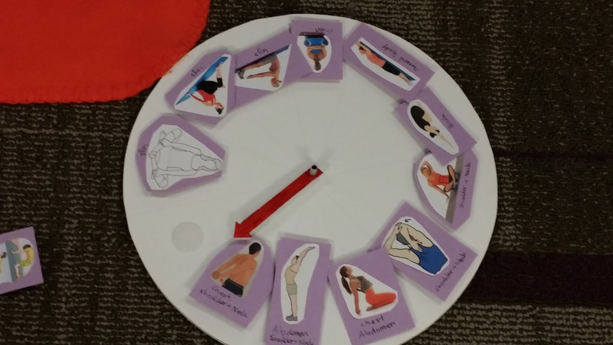
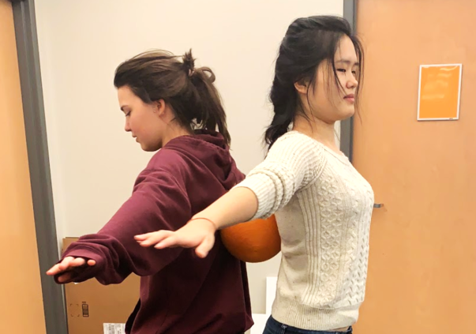
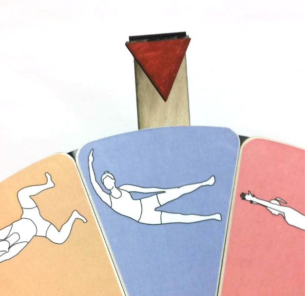
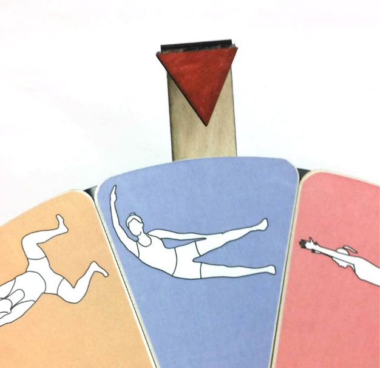

Brainstorm and Mapping
The first step we took was brainstorming our stakeholders. We wanted to specify who we making a game for and if there are any subsections of our user group.


Flow! Is a fun yet relaxing multiplayer stretching game with the goal of alleviating chronic pain before sleep.
Sleep is a crucial aspect of our lives and drives our performance for the day. For this project, our clients at Philips tasked us to solve the problem of interrupted sleep. Specifically, our focus was to target one user group: people with chronic pain. We were responsible for learning about their needs, sleep patterns and issues revolving their sleep habits. Furthermore, we defined the barriers they face and created a game that helped them get a good night's rest.
Since our user group of people with chronic pain was very broad, for our initial design, we narrowed down our target group to people with periods. Many women on their periods wake up periodically throughout the night due to several factors including: fear of staining sheets, hot flashes, excruciating cramps and general anxiety and discomfort.
The first step we took was brainstorming our stakeholders. We wanted to specify who we making a game for and if there are any subsections of our user group.
Another one of our first steps was conducting guerilla research- we created a list of interview questions: When did you start having your period? What was your biggest struggle with having period? Why? What is the worst part of having period? Has your period ever affected your sleep? How? What is your coping method for these sleep problems? How did you start this coping method? To further our knowledge about where women felt pain on their periods, we asked women around the HCI masters studio to mark down areas of the body where they have pain. As indicated by the image, most people marked their abdomen area, some marked the back, chest, head, shoulders, quadriceps and shins.

We wanted to create a game with the transformational goal of turning an experience that's uncontrollable and painful (like a period) into one where people are able to have agency, control, and comfort over their own bodies.
Through our three iterations of prototypes, we learned a lot about the design and usability of our game. One of the main elements of Flow! is the spinner that displays stretching icons. We learned after our first iteration to make sure that the icons on our game were meaningful and understandable. Many times, our playtesters were unwilling to replicate a pose because they were too difficult. For our final interation, we introduced color coding for difficulty. Blue for beginner, orange for intermediate and red for difficult. This keeps players engaged and introduces "level difficulty." Players have an opportunity to advance in the game and create more difficult sets for themselves.
Another major change was that we decided to make the spinner adjustable, meaning users could choose amongst many different stretches and place the ones they prefer on the spinner. For example, someone with chronic back pain may only pick the stretches that help alleviate her back pain. On the other hand, someone with chest pain may opt to only do upper body stretches.
Finally, to add more playfulness, we decided to introduce a stretching partner. Both players must now balance a ball between the two of them while maintaining a stretch. Playtesters who played this iteration of our prototype reported that the game was more fun and challenging.
 
